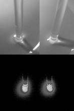

IYPT 2016 Problems
Problems for the 29th IYPT 2016
1. Invent yourself
Truly random numbers are a very valuable and rare resource. Design, produce, and test a mechanical device for producing random numbers. Analyse to what extent the randomness produced is safe against tampering.
2. Lagging Pendulum
A pendulum consists of a strong thread and a bob. When the pivot of the pendulum starts moving along a horizontal circumference, the bob starts tracing a circle which can have a smaller radius, under certain conditions. Investigate the motion and stable trajectories of the bob.
3. Acoustic Lens
Fresnel lenses with concentric rings are widely used in optical applications, however a similar principle can be used to focus acoustic waves. Design and produce an acoustic lens and investigate its properties, such as amplification, as a function of relevant parameters.
4. Super Ball
Throw a highly elastic ball into the space between two plates. The ball starts bouncing and under some circumstances can even be projected back to you. Investigate the motion of the ball and parameters influencing the motion, including the orientation of the plates.
5. Ultrahydrophobic Water
Set a dish filled with soapy water onto a loudspeaker or other vibrator. When it oscillates, it is possible to hold small droplets on its surface for a long time. Explain and investigate the phenomenon.
6. Electric Honeycomb
Set a vertically oriented steel needle over a horizontal metallic plate. Place some oil onto the plate. If you apply constant high voltage between the needle and the plate, a cell structure appears on the surface of the liquid. Explain and investigate this phenomenon.
7. Hot Water Fountain
Partially fill a Mohr pipette with hot water. Cover the top of the pipette with your thumb. Turn the tip upwards and observe the fountain exiting the tip. Investigate the parameters describing the height of the fountain, and optimize them to get the maximum height.
8. Magnetic Train
Button magnets are attached to both ends of a small cylindrical battery. When placed in a copper coil such that the magnets contact the coil, this “train” starts to move. Explain the phenomenon and investigate how relevant parameters affect the train’s speed and power.
9. Water Waves
Generate a water wave with a vertically oscillating horizontal cylinder. When varying the excitation frequency and/or amplitude, the water seems to drift away from or towards the cylinder. Investigate the phenomenon.
10. Light Rings
Let a liquid jet fall onto a surface. If the contact point is illuminated by a laser beam, rings of light around the jet can be observed (see Figure). Investigate the light rings and determine how they depend on relevant parameters of the whole system.

11. Rolling on a Disc
If you put a light rolling object (e.g. a ring, a disc, or a sphere) on a horizontal rotating disc, it may start moving without being expelled from the disc. Explain how different types of motion depend on the relevant parameters.
12. Van der Pauw Method
It is known that conductivity of a material can be measured independently of the sample shape, as long as the sample has one border (no holes). To what extent can such a method be applied? Investigate and explain such measurements if the sample has holes.
13. Paper Vice
Take two similar paperback books and interleave a few pages at a time. Push the books together. Hold the two books by their spines and try to pull them apart. Investigate the parameters that set the limits of being able to separate the books.
14. Sensitive Flame
A combustible gas (e.g. propane) streams vertically out of a fine nozzle and then through a fine metallic mesh at a distance of about 5 cm. The gas is lit and produces a flame above the mesh. Under some circumstances, this flame reacts very sensitively to sound. Investigate the phenomenon and the relevant parameters.
15. Contactless Calliper
Invent and construct an optical device that uses a laser pointer and allows contactless determination of thickness, refractive index, and other properties of a glass sheet.
16. Frisbee Vortices
When a vertical plate is partially submerged in water and pulled in a direction normal to the plate, a pair of vortices is created in the surface of the water. Under certain conditions, these vortices travel along the surface for a long distance. Investigate the parameters influencing the motion and stability of these vortices.
17. Crazy Suitcase
When one pulls along a two wheeled suitcase, it can under certain circumstances wobble so strongly from side to side that it can turn over. Investigate this phenomenon. Can one suppress or intensify the effect by varied packing of the luggage?
Authors: Alan Allinson, Ivan Antsipau, Matej Badin, John Balcombe, Alexei Bordaev, Artsiom Bury, Samuel Byland, Falk Ebert, Łukasz Gładczuk, Alexander Ivanov, Hans Jordens, František Kundracik, Hieorhi Liaśnieŭski, Lise, Ilya Martchenko, Florian Ostermaier, Stanislav Panoš, Martin Plesch, Rainer Reichle, Svilen Rusev, Andrei Schetnikov, Chik Cheng Yao, Evgeny Yunosov, Stepan Zakharov
Problem selection committee: John Balcombe, Samuel Byland, Ilya Martchenko